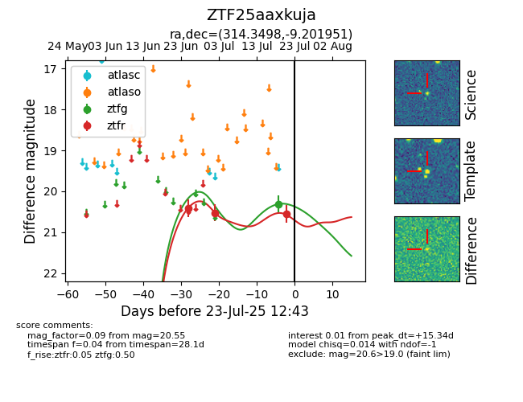

Target ZTF25aaxkuja at 2025-07-23 12:43, see:
FINK: fink-portal.org/ZTF25aaxkuja
Lasair: lasair-ztf.lsst.ac.uk/objects/ZTF25aaxkuja
ALeRCE: alerce.online/object/ZTF25aaxkuja
alt names
ZTF25aaxkuja (ztf,fink)
coordinates:
equatorial (ra, dec) = (314.3498,-9.20195)
galactic (l, b) = (39.2230,-32.12883)
photometry
last ztfg=20.31, ztfr=20.55
1 ztfg, 3 ztfr detections
